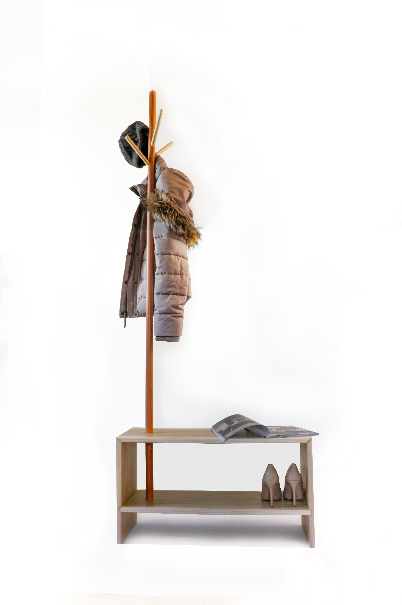
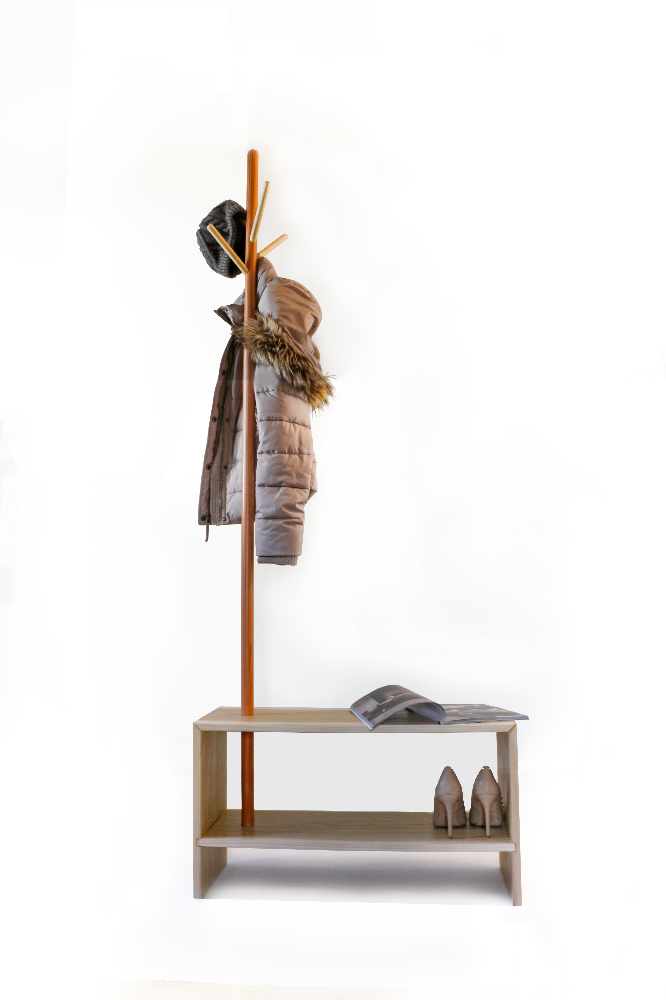

Seasons
A multi-functional and multi-user piece of furniture design for the home.
Seasons is a multi-user and multi-functional piece of furniture designed for the home. It is an object that is an unchanging and fundamental part of the home. Seasons is for the entrance of the home and can be placed against the wall. It has been designed after studying the actions one performs as soon as they come home. For example, people normally put their stuff like bags and keys down, take off their coat, scarf and hat and then take their shoes off.
Seasons allows its users to do all of these things with just one piece of furniture. It acts as a coat and hat rack where a variety of items can be hung due to the length and angle of the hooks. This stems out of a bench-like structure on which one can sit on to remove their shoes. On the lower plank, one can store their shoes and other items as per their convenience. This bench-like structure is important because it also adds stability so that the coat and hat rack would not tip over when too many bulky and heavy things are hung on it.
This is a beneficial product because it is compact and hence does not take up large amounts of space and unlike many other coat and hat racks, it has multiple purposes that seamlessly fit together.
 


-
Year: 2017
Location: Parsons School of Design
Material: Poplar and Pine Wood
By: Aditi Timbdia